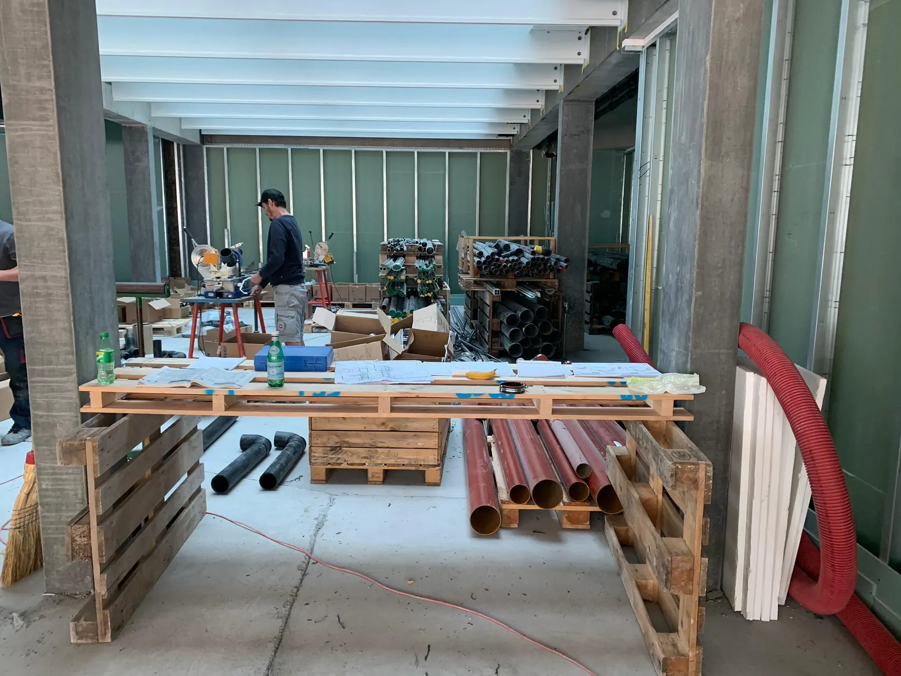

The Circle at Zurich Airport.
Head of Project Management

- Period
- 2020-2021
- Project costs
- ± CHF 1.3 billion
- Investor
- Zurich Airport Ltd.
- Location
- Zurich Airport, Switzerland
The project
With “The Circle,” Zurich Airport is developing from a traffic hub and commercial centre into a destination in its own right. National and international brands, branches and service companies in the premium segment will present themselves to an international audience on around 200,000 m² of floor space from 2021. The “Circle” employs around 5,000 people and consists of seven different modules that are interwoven throughout the complex. The project was developed using the design-to-cost method.
Challenges
From the beginning of the mandate, the project organization and the installation teams had to be organized in such a way that efficient installation processes can be achieved for 4 of the 7 building complexes. Through the implementation of internal time schedules and specifications, it was possible to significantly increase the installation performance, so that a higher output was achieved with fewer installers.
My role in the project
Head of Project Management, responsible for:
- Lead of project and site management staff
- Implementation of modern project management structures and assembly schedules
- Streamlining of assembly processes and implementation of supplementary claim processes
- Project Management until acceptance and commissioning
Images
4 images from the project, click to enlarge

